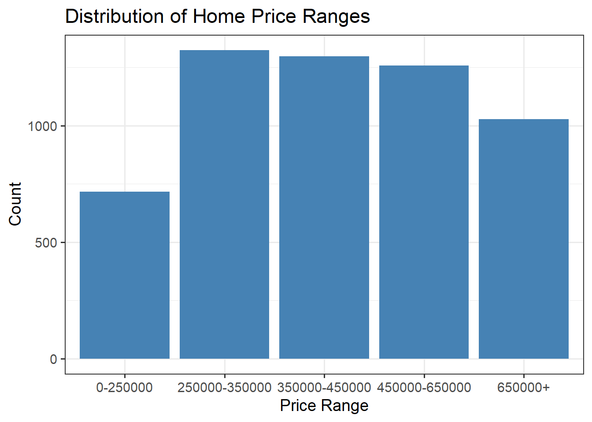

# including necessary librarieslibrary(tidyverse)library(tidymodels)library(patchwork)library(kableExtra)library(ggmosaic)# stylingoptions(kable_styling_bootstrap_options =c("hover", "striped"))theme_set(theme_bw(base_size =14))# read in datadata <-read_csv("data.csv")# split data into training, test, and validation setsset.seed(1234567890)data_splits <-initial_split(data, prop =0.75)train <-training(data_splits)test <-testing(data_splits)
Statement of Purpose
This report will build and analyze classification models to predict the price range of a home based on several predictor variables. Real estate sellers may use this information to accurately price newly listed homes, which will help to limit list price errors such as being too expensive for the home characteristics, or too cheap for the home characteristics. By improving pricing strategies, this analysis helps sellers maximize their market efficiency and attract the right buyers.
Executive Summary
Introduction
Exploratory Data Analysis
This exploratory data analysis aims to gives us a sense of what we are working with. It will explore properties of our response variable, priceRange, and some of the available predictor variables. The goal is to pick out relationships between predictor and response variables, and potentially find variables that have no impact on our response.
First we want to look at the distribution of the priceRange variable, which will be our response variable for our classification models.
Code
train |>ggplot() +geom_bar(aes(x = priceRange), fill ="steelblue") +labs(title ="Distribution of Home Price Ranges",x ="Price Range",y ="Count")

We see that the priceRange response variable is relatively uniformly distributed, with a dip for the lowest price range. However, this price range is not rare which will be beneficial for our model construction, as we will be able to accurately represent all price ranges in our model.
Let’s look at some plots between our predictor variables and the priceRange response variable and see if we can spot any trends. First, we look at different home types and how our price range is affected.
Code
train |>ggplot() +geom_bar(aes(x = homeType, fill = priceRange)) +labs(title ="Home Price Ranges due to Home Type",x ="Home Type",y ="Count",fill ="Price Range" ) +theme(axis.text.x =element_text(angle =45, hjust =1))
From this plot, we see that an overwhelming majority of the homes in the data set are single family homes. In this specific category, the bar plot indicates that the priceRange variable is relatively uniform.
Let’s look at our response variable as explained by yearBuilt.
Code
train |>ggplot() +geom_boxplot(aes(y = yearBuilt, x = priceRange)) +labs(title ="Home Price Ranges due to Year Built",y ="Year Built",x ="Price Range" )
This plot indicates that the yearBuilt predictor variable does not have a large influence on our priceRange response variable, since the IQR of the year built for each price range is relatively the same.
Let’s look at the lot size of each home and how it affects the price range.
Code
train |>ggplot() +geom_boxplot(aes(x = priceRange, y =log10(lotSizeSqFt))) +labs(title ="Distribution of Home Price Range due to Lot Size",x ="Price Range",y ="Lot Size (sq. ft.) (log scale)" )
This plot uses a log scale for the lotSizeSqFt since it contains some extreme outliers. In general, we see what is expected, in that the increase of lot size generally increases the price range of a home.
Let’s see if schools have an impact on the price range of homes. We have a couple variables that explore this idea: avgSchoolRating and MedianStudentsPerTeacher.
Code
plot1 <- train |>ggplot() +geom_boxplot(aes(x = priceRange, y = avgSchoolRating)) +labs(title ="Home Price Ranges due to Average School Rating",x ="Price Range",y ="Average School Rating" )plot2 <- train |>ggplot() +geom_boxplot(aes(x = priceRange, y = MedianStudentsPerTeacher)) +labs(title ="Home Price Ranges due to Median Students per Teacher",x ="Price Range",y ="Median Students per Teacher" )plot1 / plot2
These two variables related to schools show some obvious positive trends with the priceRange response variable. It was expected that as avgSchoolRating increased, so would priceRange, however it is important to note that as MedianStudentsPerTeacher increased, we also see an increase in priceRange. This might battle your intuition, but the data supports this conclusion.
Let’s look at some characteristics specific to our homes, the numOfBathrooms and numOfBedrooms variables.
Code
plot3 <- train |>ggplot() +geom_bar(aes(fill = priceRange, x =as.factor(numOfBathrooms))) +labs(title ="Home Price Ranges due to Number of Bathrooms",x ="Number of Bathrooms",y ="Count",fill ="Price Range" )plot4 <- train |>ggplot() +geom_bar(aes(fill = priceRange, x =as.factor(numOfBedrooms))) +labs(title ="Home Price Ranges due to Number of Bedrooms",x ="Number of Bedrooms",y ="Count",fill ="Price Range" )plot3 / plot4
These plots display some interesting information about our homes. In both plots, we see that as the number of bathrooms/bedrooms increase, we start to see a domination from the higher price range homes. This makes intuitive sense. On the flip side, for lower numbers of bathrooms/bedrooms we see more domination by the lower price range homes. Again, this makes intuitive sense.
This exploratory data analysis helps us to visualize our data and spot initial trends. Through this analysis, we have learned that our response variable, priceRange, is relatively uniformly distributed which is a desirable quality for model construction. We see that a majority of our homes in the data set are single family, and that lot size has a clear relationship with price range. We also saw that schools in the area of the homes, as well as number of bathrooms and bedrooms have clear relationships with price range. Lastly, we also saw a variable that didn’t have much of an effect on our price range response, that being yearBuilt. This information will help us construct more effective classification models in the next section.